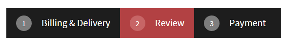

Configuring steps of the checkout process
To allow your customers to purchase products in your on-line store, you need to configure the checkout process.
To create the checkout process, use only the Portal engine. The ASPX templates are not supported as well as if you use Portal engine sections on pages based on the ASPX templates.
To configure the checkout process on your website:
To configure navigation between steps, see Building step navigation on the Creating wizards on websites page.

Step navigation in the checkout process
See example checkout processes on the E-commerce site and Dancing Goat sample sites.
Setting up the checkout wizard
If you create the checkout process, you can either use the predefined Checkout wizard and Checkout step page types from any of the e-commerce sample sites, or create your own Checkout wizard and Checkout step page types from scratch (see Creating wizards on websites).
To be able to use the predefined page types, add the page types to your site:
Open the Page types application.
Edit (
 ) the Checkout wizard page type.
) the Checkout wizard page type.Switch to the Site tab.
Click Add sites.
Select your desired sites and click Select.
Repeat the steps with the Checkout step page type.
Both the Checkout wizard and Checkout step page types are now available for you to use.
To set up a checkout process wizard on your website:
Open the Pages application.
Select a page under which you want to place the wizard page in the content tree.
Add a new page based on the Checkout wizard page type.
Type the wizard name.
Click Save.
The system adds the checkout wizard page containing a basic set of the required functional components; for example the Page wizard manager web part, the Page place holder web part, and the Page wizard navigation web part. The wizard page serves as the "parent" of the checkout wizard and provides a master page for the content of the checkout process steps.
Check the settings of the Checkout wizard page type.
Make sure the Restrict step order field of the Page wizard manager web part is selected, forcing the customers to progress through the checkout steps in the defined order. For example, you want to prevent the customers from visiting the Shipping page prior to specifying the shipping address.
Specify the Final step URL property of the Page wizard manager web part to redirect the customers to a selected URL, for example, to the payment gateway page. After the customer clicks the final "next" button (also "Finish", "Order now"), the system creates an order in the system and redirects the customers to the final step URL. See Configuring the payment page below for more information.
Adding the checkout steps
To add the checkout wizard steps, add child pages under the checkout wizard page. Build the content of the steps just like any other portal engine pages.
Open the Pages application.
Select the checkout wizard page in the content tree.
Click New (
 ).
).You have used the Checkout wizard page type to create the checkout wizard page. That is why the system now offers the dedicated Checkout step page type for the checkout steps.
If an error appeared that you cannot create any page in the checkout process, you need to create the Checkout step page type first.
If you installed any of the e-commerce sample sites, you can use also the predefined Checkout step page type. See the Setting up the checkout wizard section.
Select the Checkout step page type.
Type the step name of the checkout step.
Click Save to add the step.
Edit the step and its web parts to achieve the desired appearance.
To learn about the web parts that you can use when configuring the checkout process, see:
If data of two or more web parts relate to each other, i.e. if the content of a web part changes according to the content of another web part, and such web parts are on the same step, it is essential for the system to process the data immediately after its input. Typically, such situation happens in the one-step checkout process.
Ensure this behavior by selecting the Propagate changes on postback field for web parts where available. Also, select the AJAX -> Use update panel field for the web part zone wrapping up the content of the checkout step. Make sure this field is cleared for all contained web parts, same as for all nested web part zones. For example, if you select the shipping option and the shipping address on the same step and the list of shipping options depends on the shipping country. Failing that, you may experience interference with the display and behavior of the page.
If only one web part is dependent on its own data, you can select the AJAX -> Use update panel field only for the web part. For example, in case you want to display a drop-down list for selecting a state only when a country with states is selected in a country drop-down list.
To prevent the customers from updating previously entered data (typically in multi-step checkout processes), select the Read only mode field for selected web parts (if available).
Configuring steps of the checkout process
Allowing checkout processes for anonymous or registered customers
(Optional) Enabling automatic registration for anonymous customers
-
Configuring steps of the checkout process
The system adds the checkout step in the specific configuration.
Checkout steps in basic configuration
You can change the order of the steps by simply drag-and-dropping the desired step or using the Move up ( ) and Move down (
) and Move down ( ) buttons.
) buttons.
Changing the order of wizard steps
Configuring the payment page
The payment page is a page where your customers can pay their orders or be redirected to a third party payment gateway. Technically, the payment page is not a part of the checkout process in Kentico because the order is created by the end of the checkout process and then you can pay for the order. However, you can customize the checkout process so that you can enable payment during the checkout process (you need to create the order object earlier, during the checkout process).
You do not need to create the payment page if all your payment methods are manual. In such case, you can skip creating the payment page and go directly to configuring the thank you page.
To create the payment page:
Open the Pages application.
Create a regular page outside the checkout process.
The payment page outside the checkout processPut the Payment form web part on the page.
The Payment form web part displays ID of the order, the selected payment method, the total price of the order and a button that either pays the order (e.g., subtracts the customer credit) or redirects the customer to a payment gateway (e.g., when using PayPal or credit card payment).
Switch to the root page of the checkout process.
On the Design tab, edit the Page wizard manager web part.
In the Content filter -> Final step URL field, type the address of the payment page.
You can use relative addresses, for example "~/Special-Pages/Payment-Page".
Click Save & Close.
Customers are now able to pay for their orders on the created payment page.
Configuring the thank you page
The thank you page is a page where your customers are redirected after they pay (if there is a payment page) or redirected after creating the order (if there is not any payment page). Technically, the thank you page is not a part of the checkout process but directly follows up the checkout process and the payment page. The order is already created and you only indicate that the process was successful.
If you do not want to inform your customers that the order has been successfully created or paid, you do not need to create any thank you page and you can only set the checkout wizard to redirect the customers to a different page. However, your on-line store is more user-friendly to your customers with a thank you page.
The thank you page example
To create the thank you page:
Open the Pages application.
Create a regular page outside the checkout process.
The thank you page does not require any specific setting.
Set the checkout process to redirect customers to the thank you page.
If you have a payment page:
Switch to the payment page.
On the Design tab, edit the Payment form web part.
In the General -> Thank you page URL field, type the address of the thank you page.
You can use relative addresses, for example "~/Special-Pages/Thank-You".
If you use PayPal, you need to set the thank you page also in the PayPal settings in the Settings application.
Click Save & Close.
If you do not have any payment page:
Switch to the root page of the checkout process.
On the Design tab, edit the Page wizard manager web part.
In the Content filter -> Final step URL field, type the address of the thank you page.
You can use relative addresses, for example "~/Special-Pages/Thank-You".
Click Save & Close.
After paying the order (if the checkout process ends with a payment page) or creating an order (if the checkout process does not end with a payment page), the customers are redirected to the created thank you page.
Configuring the checkout process settings
Affect behavior of the checkout process by setting up its settings:
Open the Store configuration application (if you want to set up the settings on the current site) or open the Multistore configuration application (if you want to set up the checkout process globally).
If you are not sure what to choose, see Choosing site or global e-commerce configuration. If you are not sure about specifics of configuring in these applications, see Configuring e-commerce settings for a specific site or globally.
On the Store settings -> General tab, configure the Shopping cart URL field:
If you work in the Store configuration application, clear the Inherit from global settings field.
Type the URL of the shopping cart.
Use the tilde character (~) in the URL to create a relative address. For example: ~/Store/Shopping-cart
You can then retrieve the URL with the {% Settings.CMSShoppingCartURL %} macro method. Learn more about displaying shopping cart preview on pages, where this macro can be especially useful, in Displaying the shopping cart preview on pages.
_
Configure the Redirect to shopping cart field:
If you work in the Store configuration application, clear the Inherit from global settings field.
Select the check-box to set that the system redirects the customer to the shopping cart page when they click Add to shopping cart. Clear the check-box to set that the customer stays on the same page, and the product is added to the shopping cart in the background.
Click Save.
The system saves the configuration.